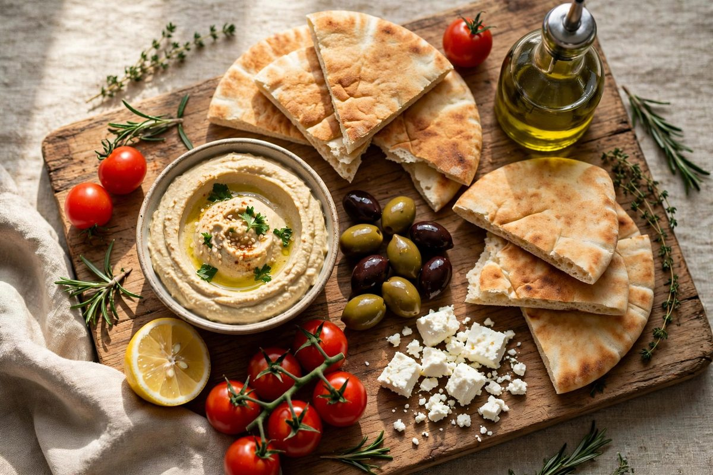

Home » Guides
Mediterranean Snacks

Snacking in the Mediterranean is different from snacking in many other places. Instead of crisps and biscuits, people eat olives, nuts, fruit, and yoghurt — foods that are satisfying, nutritious, and part of the daily pattern. This guide lists the best Mediterranean snacks, how to serve them, and when to snack at all.
Olives, nuts, and fruit
Olives are the classic Mediterranean snack: salty, rich in healthy fats, and easy to keep in the cupboard. A small bowl of olives with a piece of bread is a proper snack. Nuts — almonds, walnuts, hazelnuts, and pistachios — are another staple, providing protein, fibre, and healthy fats. Keep portions modest, about a small handful, since nuts are calorie-dense. Fresh fruit is the everyday snack: an orange, a handful of grapes, a peach, or a few figs. Dried fruit such as dates and apricots is also popular, but it is higher in sugar, so eat it in small amounts.
Yoghurt and cheese
A small pot of Greek yoghurt with honey and walnuts is a satisfying snack that provides protein and calcium. A piece of cheese with fruit — feta with melon, or manchego with grapes — is a classic combination. A slice of bread with tomato and olive oil, the Spanish pan con tomate, works as a snack as well as a breakfast. These snacks are simple, need no cooking, and are far more filling than a biscuit or a packet of crisps.
Mezze and dips
Mezze is the Mediterranean way of snacking: a spread of small dishes to share. Hummus, tzatziki, baba ganoush, olives, cheese, bread, and salad make a generous snack or a light meal. Dips are easy to make and keep in the fridge for several days. Serve them with vegetable sticks, pitta bread, or crackers. Mezze is ideal for evenings with friends, since it is social, relaxed, and easy to prepare in advance. It is also a good way to eat a variety of foods in one sitting.
When to snack
In the Mediterranean pattern, snacking is modest. Most people eat three meals a day, with a small snack in the late afternoon if needed. The afternoon snack — a piece of fruit, a handful of nuts, or a yoghurt — bridges the gap between a midday lunch and a late dinner. If you are hungry between meals, first check whether you drank enough water or ate enough at your last meal. When you do snack, choose a real food rather than a processed one, and eat it sitting down rather than on the move.
Snacks for a party
A Mediterranean snack spread is ideal for a party, because it is easy to prepare and everyone can help themselves. Set out bowls of olives, nuts, and hummus, a plate of cheese and fruit, a basket of bread, and a few dips. Add a salad and some grilled vegetables, and you have a generous spread that suits most guests, including vegetarians. Prepare the dips and salads in advance, and put the food out just before guests arrive. A snack spread is relaxed and social, and it is far less work than a formal dinner. It is also a good way to introduce friends to Mediterranean food, one small taste at a time.
Frequently Asked Questions
What is the healthiest Mediterranean snack?
A handful of nuts, a piece of fruit, or a small pot of Greek yoghurt. All three are satisfying, nutritious, and part of the traditional pattern.
Are olives healthy?
Yes. Olives are rich in monounsaturated fats and polyphenols. They are salty, so eat them in moderation, but they are a far better snack than crisps.
Can I snack on bread in the Mediterranean diet?
Yes, in moderation. A slice of wholegrain bread with tomato and olive oil is a traditional snack. Keep the portion small and add a protein such as cheese or yoghurt.